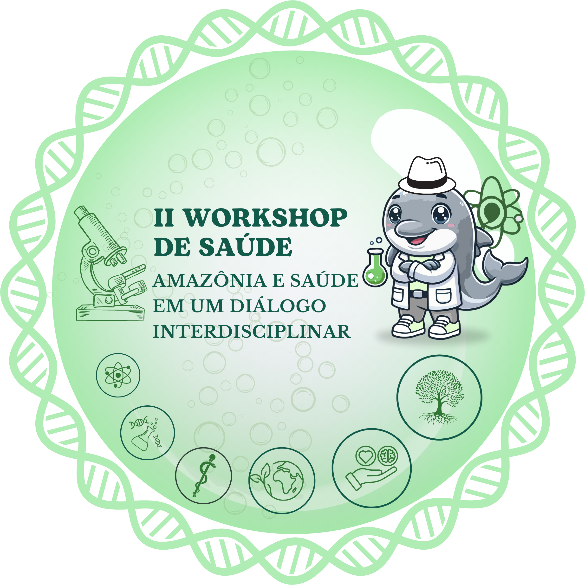

29 e 30 de Maio de 2025
O credenciamento para as palestras no dia 29/05/2025 (primeiro dia) é obrigatório para a emissão do certificado do evento e também dos minicursos.
Mesmo que o minicurso escolhido ocorra apenas no segundo dia, é obrigatório participar das palestras. A ausência no credenciamento das palestras implica na não emissão de qualquer certificado.
Nos acompanhe pelo Instagram:
Instagram da Turma